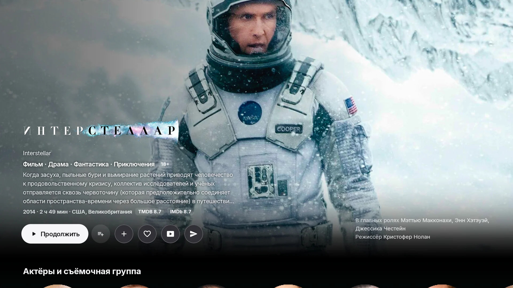

Android TV и Google TV
Твой компас
в мире кино
Фильмы, сериалы и твоя личная коллекция. Всё на большом экране.

Бесплатно. Доступ по приглашению.
Android TV и Google TV
Фильмы, сериалы и твоя личная коллекция. Всё на большом экране.

Бесплатно. Доступ по приглашению.